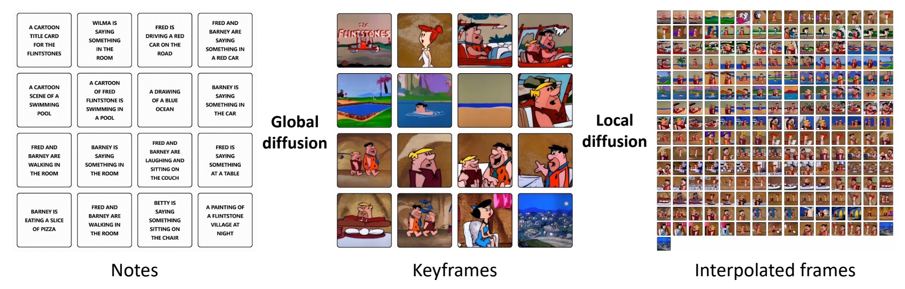
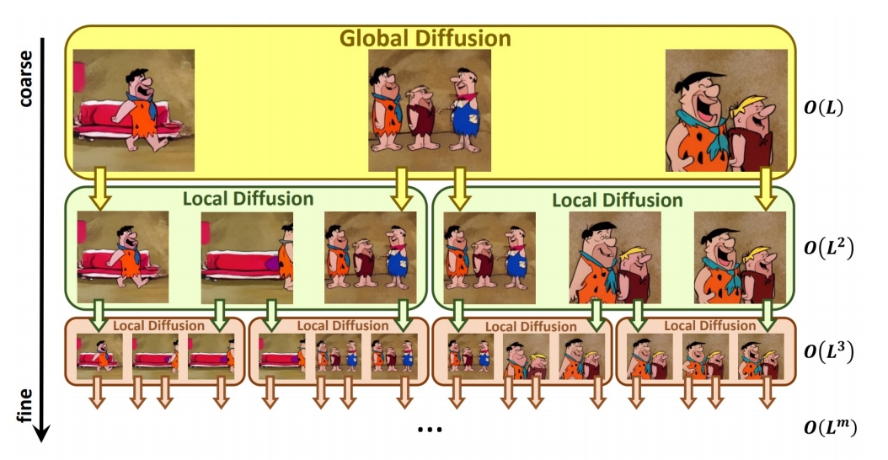
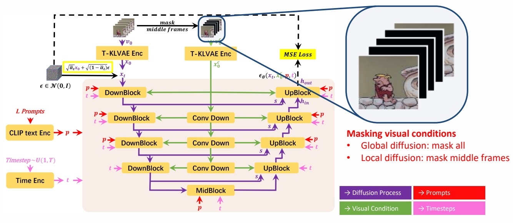

P126
2 Video Generation
2.6 Long video generation
P127

✅ 声音(非语音)引导的生成。
P128
NUWA-XL
Recursive interpolations for generating very long videos
Method Proposed
- A “diffusion over diffusion” architecture for very long video generation
Key Idea
- Key idea: coarse-to-fine hierarchical generation
Other Highlights
- Trained on very long videos (3376 frames)
- Enables parallel inference
- Built FlintstonesHD: a new dataset for long video generation, contains 166 episodes with an average of 38000 frames of 1440 × 1080 resolution
Yin et al., “NUWA-XL: Diffusion over Diffusion for eXtremely Long Video Generation,” arXiv 2023.
P129
NUWA-XL
Recursive interpolations for generating very long videos
Generation Pipeline
- Storyboard through multiple text prompts

Yin et al., “NUWA-XL: Diffusion over Diffusion for eXtremely Long Video Generation,” arXiv 2023.
P130
NUWA-XL
Recursive interpolations for generating very long videos
Generation Pipeline
- Storyboard through multiple text prompts
- Global diffusion model: L text prompts → L keyframes
- Local diffusion model: 2 text prompts + 2 keyframes → L keyframes

Yin et al., “NUWA-XL: Diffusion over Diffusion for eXtremely Long Video Generation,” arXiv 2023.
✅ 大脑信号控制生成。
P131
NUWA-XL
Recursive interpolations for generating very long videos
Mask Temporal Diffusion (MTD)
- A basic diffusion model for global & local diffusion models

Yin et al., “NUWA-XL: Diffusion over Diffusion for eXtremely Long Video Generation,” arXiv 2023.
P133
Long Video Generation: More Works
 | Latent Video Diffusion Models for High-Fidelity Long Video Generation (He et al.) Generate long videos via autoregressive generation & interpolation “Latent Video Diffusion Models for High-Fidelity Long Video Generation,” arXiv 2022. |
 | VidRD (Gu et al.) Autoregressive long video generation “Reuse and Diffuse: Iterative Denoising for Text-to-Video Generation,” arXiv 2023. |
 | VideoGen (Li et al.) Cascaded pipeline for long video generation “VideoGen: A Reference-Guided Latent Diffusion Approach for High Definition Text-to-Video Generation,” arXiv 2023. |
✅ 已有一段视频，通过 guidance 或文本描述，修改视频。
本文出自CaterpillarStudyGroup，转载请注明出处。
https://caterpillarstudygroup.github.io/ImportantArticles/